Awami Nastaliq Developer Documentation
Kerning and Overlaps
Kerning in Awami is rather complicated, being affected by a number of factors:
- The natural side-bearings of the two adjacent glyphs
- Adjusted fake side-bearings (indicated by a special AP)
- Pair kerning
- The actual shape of the glyph (as calculated by the kerning slices)
- The presence of spaces between the adjacent glyphs
Case 1: natural side bearings
A simple case to consider is dal + lam. The LSB of the dal = 97 and the RSB of the lam = 158. Together these add up to 255, which is the margin assigned to the dal. The collision avoidance mechanism uses that margin to maintain 255 units between the actual shapes of the two glyphs (which might be curved in interesting ways).
In the image below, the green area between the dal and the right-most jagged line represents the margin of 255 units. The two glyphs are kerned so that the left edge of the dal offset by the margin and the right edge of the lam just touch; this point is indicated in red. Notice that the slight curve in the lam causes the glyphs to be positioned more closely than they would be if the lam had a truly straight vertical side.
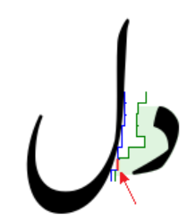Case 2: natural side bearings plus pair kerning
Pair kerning is used to fine-tune spacing between certain glyphs. A useful example is waw + alef. The waw has an LSB of 98 and the alef has an RSB of 109. To this we add a pair-kerning value of -30 in order to tighten up the glyphs slightly. The margin assigned to the waw is 98 + 109 - 30 = 177.
The images below show the pair of the glyphs with and without the pair kerning.
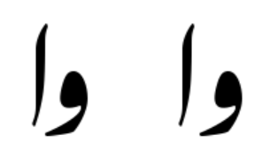Part of our goal with pair kerning is to get spacing nicely consistent among characters like alef, dal, reh, and waw.
Pair kerning is implemented using a set of glyph attributes:
kernPreAlefkernPreDalkernPreRehkernPreZainkernPreWawkernPreLamAlefkernPreJeemAinIso(isolate jeem and ain)kernPreExclam
These attributes are set for glyphs that need special treatment before the relevant following glyphs. Then there is a corresponding set of rules that set a user-defined slot attribute called pairKern (user2) when triggered by the presence of the relevant glyphs. In addition, there are a handful of special rules that set the pairKern attribute for more specific cases. Pair kerning is applied in pass 17.
Case 3: adjusted fake right side bearing
This is where things get the most complicated. The kaf glyph serves as a useful illustration due to its distinctive shape:
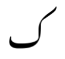The side bearings of glyphs have a direct effect at the right and left margins. For the kaf, the right side bearing is slightly negative (shown in the diagram below), causing the upper tip of the kaf to protrude slightly into the right margin when it occurs at the beginning of a line. In the middle of the line, though, a very different kerning process needs to happen.
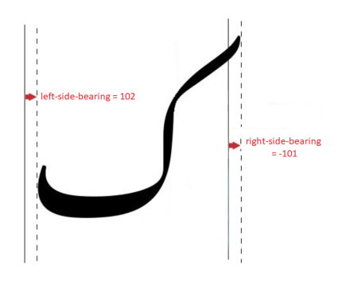Because the built-in kerning process works with the actual, visible edge of the glyph, most preceding glyphs will be automatically kerned relative to the actual vertical stroke, not the official bounding box, and this is what we want for proper Nastaliq-style kerning. But consider that without any special process, the negative RSB of the kaf (-101) would generally cancel out much of the LSB of the preceding glyph (usually about 103) and produce a margin of something close to zero, resulting in, e.g.,
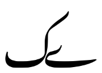This is clearly unacceptable, so how do we indicate how much additional space is needed? One way would be to set a “kernPreKaf” pair kerning for every final/isolate glyph in the font, but it seemed preferable to find a way to indicate it as part of the kaf glyph itself (since the issue related to the shape of the kaf).
So what we do is define a point on the glyph that serves as a fake right edge of the bounding box for the sake of kerning. This is done using an attachment point (although it is not used for attachment, and the y coordinate is irrelevant) called kernBbRight. We set it inside the advance width, and the distance inside indicates the functional RSB that we want to use for the sake of kerning. The image below shows that placing the kernBbRight point at 3060 creates an RSB of 150.
When combined with the LSB of a typical preceding glyph (103), this results in a kerning margin of 253.
Note that this has the counterintuitive effect that the further right the point is located, the closer it will be to the advance width, and therefore the smaller the RSB and the tighter the kerning. The further left the point is located, the further the distance from the advance width and the looser the kerning. This is shown in the images below that correspond to the possible values of kernBbRight above.
Maybe a simpler approach would be to just hard-code a rule that sets a pairKern value to 251 for all glyphs that occur before a kaf, so that the margin factor of the kaf would end up = -101 + 251 = 150.
Case 4: adjusted fake left side bearing
A similar mechanism exists to handle kerning on the left side of a problematic glyph. An example of where it is used is the final reh. This form has a significant negative LSB to account for the extended tail, which means that there is a potential for the tail of the reh to extend significantly into the left margin:
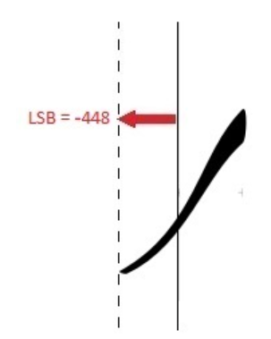Again, in the middle of a line, this negative number effectively cancels out the RSB on the following glyph, resulting in no margin.
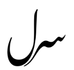
Creating an alternate side-bearing for the use of kerning fixes the problem.
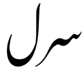
(Note: I’d expect that there shouldn’t be much need for this mechanism on the left side of the glyph, due to the fact that the left-hand margin of the text is usually not so critical, so we should usually be okay with setting the LSB appropriately for kerning rather than the end of the line. But in fact there are quite a few glyphs that have kernBbLeft set. This might be worth reviewing.)
Case 5: intervening spaces
Spaces are handled by calculating the kerning as if the space is not there, and then simply adding the amount of space needed for the space character(s). The image below shows (right to left) no space, a narrow space, a standard space, and two spaces.
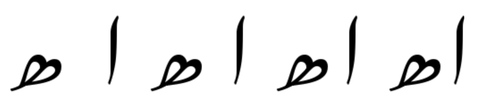
Overlaps
The Graphite kerning mechanism is also used to create overlapping diagonal segments, as is seen in proper (handwritten) Nastaliq calligraphy. A negative kerning value is used to move two segments closer together in order to create the overlap. The image below shows some overlaps:
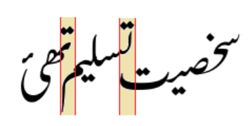There are a number of tricks that we use to fine-tune the amount of overlap.
MINKERN and minKernDelta
We define a global constant, a minimum kern that indicates the largest negative shift. (Originally the idea was to allow different degrees of kerning depending on the spacing tightness, but I ended up not using that approach.) The default MINKERN value is -700m, which permits a fairly small overlap (about the width of a waw), but other factors can also be included.
In a few situations we include a minKernDelta factor. For rehs with long tails, we use minKernDelta to allow extra kerning. For punctuation, we use it to cancel out MINKERN and thereby only allow an exact amount of kerning.
Short sequences
One of the challenges is that short sequences of one or two characters can get “lost” underneath longer following sequences. But longer sequences don’t have that problem so more kerning is appropriate.
For example, in the image below, the reh and beh+reh get lost under the sequence that follows them, while the longer sequences are okay:
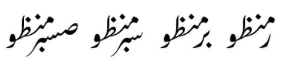To address this, we measure the length of a sequence as we attach glyphs; the seqWidth slot attribute keeps track of the total. If the sequence width on the final glyph is less than a certain value, that indicates a short sequence and the width is taken into account, but over a certain threshold, the width is ignored. (In other words, long sequences can’t necessarily be kerned as much as possible; other limits still apply.) These thresholds are rather arbitrary, determined by experimentation.
This shows the result with the kerning on the short sequences limited as described above:
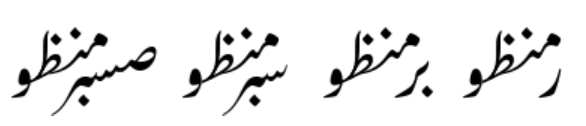Low punctuation
Another kerning issue involves low punctuation, such as commas, periods, etc. A design question is whether low punctuation should be kerned under the following sequence where possible, or whether punctuation should interrupt the overlapping. In other words, which of the two results below is preferable?
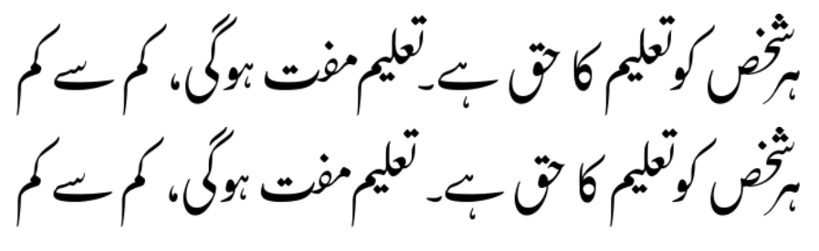Currently we have implemented the first, where the full stop following the heh-goal+bariyeh kerns underneath the word starting with teh+ain. In order to achieve this, we include the punctuation within the sequence when we compute seqWidth.
Apparently we ran into a little problem where with the standard kerning mechanism, the punctuation can end up too tight. The cleanest way to fix that, unfortunately, was to create a little clean-up pass at the very end. Also unfortunately, I don’t have an example to show why this is necessary. I have a question whether it is in fact needed, but I don’t want to change it when nobody is complaining.
An unresolved question is whether the full stop should behave differently from other punctuation such as the comma. That is, should the full stop break the kerning even though other punctuation does not? Currently they are behaving identically.
Note: it may seem unnecessarily convoluted to use all these mechanisms to control kerning. But it seems that by using a mixture of rules, defined constants, and slot attributes, it has been possible to keep the number of rules down to a reasonable amount; otherwise I have a concern about exploding the list of rules and the finite state machines inside the font.